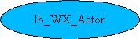
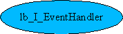
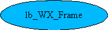

Dieses Thema hatte ich am Anfang der Entwicklung dieser Bibliothek aufgegriffen. Es ist aber später in den Hintergrund geraten, da die grundlegenden Mechanismen gefehlt haben.
Mit der Anbindung einer GUI hatte ich folgendes im Sinne:
Es sollte möglich sein, jede beliebige GUI, sei es wxWindows oder MFC, zu verwenden um die Anwendung darstellen zu können.
Generell kann auch eine Anwendung ohne GUI erstellt werden. Eine Applikation ohne GUI kann, wie die Testanwendung für das lbModule Projekt, schon alle weiteren Objektinstanzen anfordern. Sie müssen konfiguriert sein.
Eine GUI ist etwas komplexer, es sollte aber auch möglich sein, eine GUI von Objektinstanzen – erzeugt durch lbModule – zu steuern.
Anforderungen, die ich an eine GUI stelle:
Alle Objektinstanzen werden durch das Interfacerepository erzeugt.
Die Interaktion der GUI erfolgt über wohldefinierte Schnittstellen.
Die GUI stellt eine gewisse Menge an Eventhandlern bereit.
Eventhandler werden mit einem Set von Interfacefunktionen verwaltet.
Bei der Verwendung der wxWindows Library stelle ich folgende Eigenschaften fest:
Jeder Eventhandler kann für bestimmte Events verantwortlich sein. Dadurch ergibt sich, daß nicht an zentraler Stelle Events konfiguriert werden.
Events sind nichtvirtuelle Funktionen. Diese können also nicht in den Interfaces definiert werden. Wann soll ein Event durch direckten Aufruf der Eventfunktion ausgeführt werden? Das Interface dieses Events muß nicht bekannt sein. Nur der Event selbst. Dieser kann auch als Aktor initziiert werden (Timer, Interrupt...)
Dazu stelle ich weitere Gedanken:
Jeder Handler kann nur bestimmte Events verarbeiten. Dieses sind die Muß und Kann – Events.
Ein Fehlercode teilt mit, daß dieser Event nicht verarbeitet werden kann. Eine Verknüpfung des betroffenen Events mit diesem Handler ist nicht möglich.
Eine Funktion stellt eine Liste der Events bereit, die für das Objekt benötigt werden. Eine Frame listet z.B. EV_ABOUT,EV_EXIT... Diese Events sollten Ereignisse empfangen könnnen.
Um Events empfangen zu können, müssen auch Objekte vorhanden sein, die diese senden können. Dies sind z.B. Menüs, oder Shortcuts. Ich nenne diese auch Aktoren. Dies können auch Hardware – oder Remote – Aktoren ein.
Dies sind nur einige Gedanken, die ich weiterspinnen werde.
Ich stelle mir eine Anwendung wie folgt im Ablauf vor:
Ein GUI Wrapper wird gestartet, welcher natürlich auch seine Konfiguration vorfindet. Es gibt einen Ablaufplan, welcher einzuhalten ist und den Benutzer durch das Programm führt. Als wesentlicher Schritt darin ist die Initialisierung der Anwendung zu nennen. Hier werden alle initialen Objekte erzeugt und verknüpft. Nach der Verknüpfung wird geprüft, ob alle Eventhandler auch mit Aktoren verbunden sind. Dies dient dem Programmentwickler als Prüfung zur Lauffähigkeit.
Nun zu den Interfaces, die zu dieser Anforderung implementiert werden könnten:
Connect verbindet einen Event mit einem Handler
Disconnect trennt diesen wieder
DisconnectAll trennt alle
getHandlerHavetoConnected listet alle Eventhandler mit einem Eventnamen
approveConnections prüft, ob alle Handler konnektiert sind
Folgende Interfaces können dadurch definiert werden:
class lb_I_EventHandler {
virtual lbErrCodes Connect(
lb_I_Actor* an_actor,
char* eventname,
evPTR* evFn
} = 0;
virtual lbErrCodes registerEvents() = 0;
virtual lbErrCodes getHandlerHavetoConnected(lb_I_Container* c) = 0;
virtual lbErrCodes approveConnections() = 0;
};
class lb_I_Actor {
virtual lbErrCodes registerActors() = 0;
};
class lb_I_Menu :
public lb_I_Actor, // Erzeugt Events
public lb_I_EventHandler, // Events können deaktiviert werden
public lb_I_Unknown {
};
class lb_I_EventConnector {
virtual lbErrCodes getProduceableEventList(lb_I_Container* c) = 0;
};
class lb_I_Frame :
public lb_I_Actor, // ???
public lb_I_EventHandler,
public lb_I_Unknown {
};
class lb_I_GUIWrapper :
public lb_I_Actor,
public lb_I_EventHandler,
public lb_I_Unknown {
};
Ich stelle mir eine Schnittstelle für ein GUI Element wie folgt vor:
class lb_I_GUIElement : public lb_I_Unknown {
// Ein GUI Element kann Ereignisse erzeugen
virtual lbErrCodes createEvent(char* name, lb_I_GUIEvent* event) = 0;
// Ein GUI Element kann Ereignisse empfangen
virtual lbErrCodes recieveEvent(char* name, lb_I_GUIEvent* event) = 0;
}
Wie kann nun eine Interfacedefinition mit einem realem Objekt, wie ein Menü interagieren ?

Referenz

Das Interface lb_I_EventHandler ist z.B. eine Frame. Diese implementiert einige Events, die es zu verknüpfen gilt. Eine Liste der Events erhält man über die Funktion getHandlerHavetoConnected(...). Diese Funktion kann in der Designphase verwendet werden, um zu sehen, welche Aktoren benötigt werden.
Beispielsweise kann dadurch automatisch eine Liste mit Aktorobjekten erstellt werden, und die Verbindungen könnten so ohne zuhilfenahme von Designwerkzeugen erstellt werden.
lb_WX_App ruft in diesem Fall getHandlerHavetoConnected(...) auf und kann aus der Liste Aktoren erzeugen lassen, um Sie dann zu verbinden.
Wie weiß lb_WX_App, welche Objekte logisch zusammen gehören ?
Ein Objektinterconnektion Graf muß diese Informationen bereithalten. Wie kann dieser Graf aussehen ?